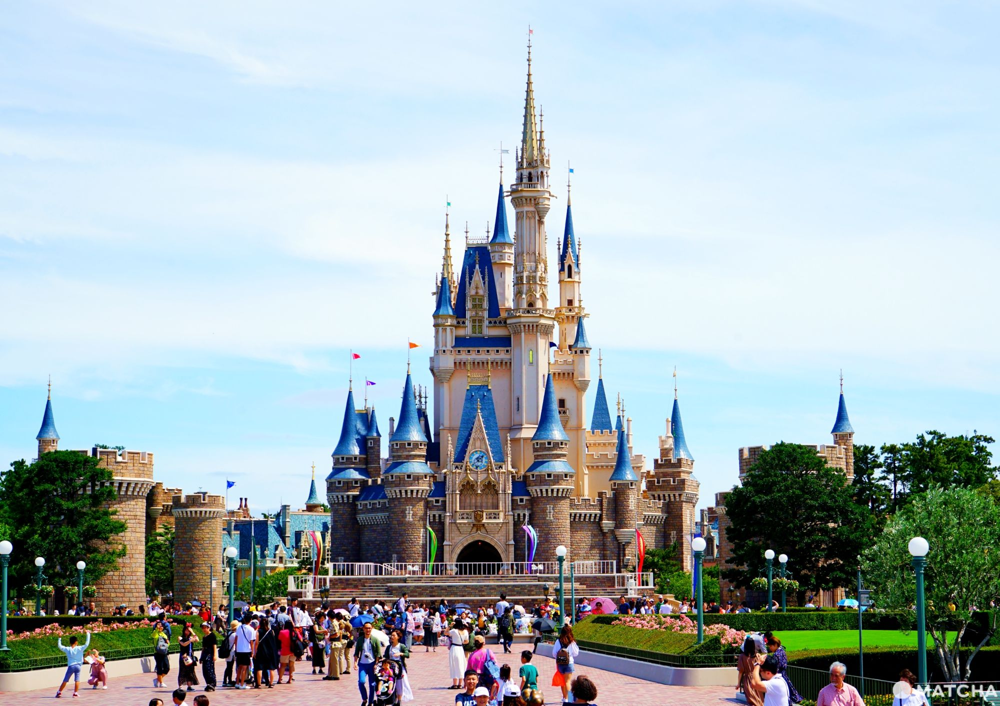
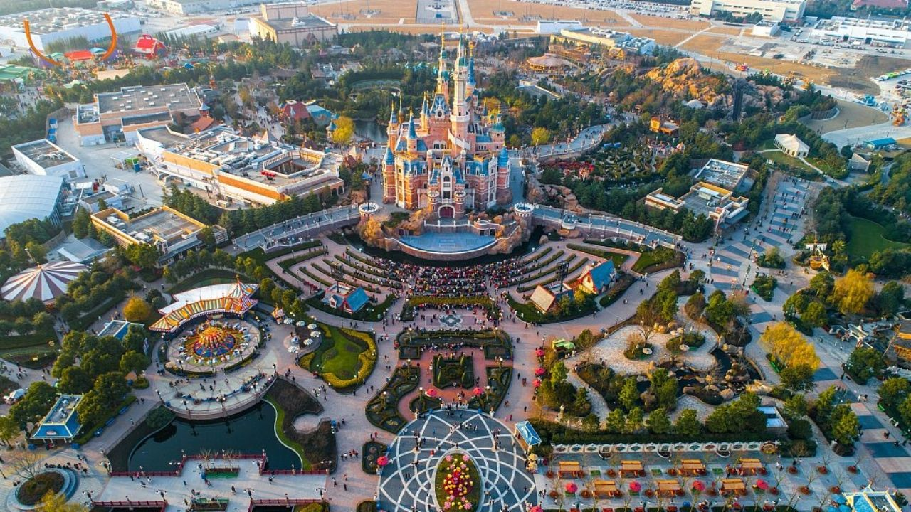

Learn More
-
1
Disneyland Park
The first Disneyland park, located in Anaheim, California, opened in 1955. It is the oldest and most famous park in the Disneyland chain.

-
2
Walt Disney World Resort
The Walt Disney World Resort, located in Orlando, Florida, opened in 1971. It includes four theme parks, two water parks, several hotels and a golf course.

-
3
Disneyland Paris
Disneyland Paris, located in the Île-de-France region of France, opened in 1992. It is the second largest Disneyland park in terms of attendance.
.webp)
-
4
Tokyo Disney Resort
The Tokyo Disney Resort, located in Urayasu, Japan, opened in 1983. It includes two theme parks, a water park and several hotels.
 -
5
Hong Kong Disneyland
Hong Kong Disneyland, located on Lantau Island in Hong Kong, opened in 2005. It is the smallest Disneyland park in terms of area.

-
6
Shanghai Disney Resort
The Shanghai Disney Resort, located in Shanghai, China, opened in 2016. It includes a theme park, two hotels and a golf course.

Filmography
Lee Unkrich is an animated film director who works for Pixar Studios. He has directed the 4 films Toy Story, Coco, Nemo, Monster and Co., Monster Academy, 1001 Paws and Arlo's Journey


Glossary
Global warming: warming of the global climate due to the increase of CO2 in the atmosphere
Renewable energy : All energies that can be reused at will on a human scale and that do not pollute the planet. They are the opposite of fossil fuels.
One Piece : Legendary treasure left by the pirate king Gold Roger. No one knows what it contains to the point where some doubt its existence, but it is because of this treasure that the golden age of piracy took place. It is this treasure that gives the manga its name.
Paris Agreement: Agreement signed on 12 December 2015 by 174 countries with the common goal of reducing greenhouse gas emissions to limit the global temperature increase to 1.5°C above pre-industrial levels.